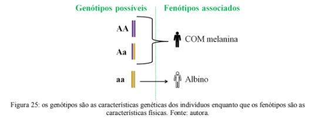

Capítulo 3
INDÚSTRIA TÊXTIL: VARIAÇÕES GENÉTICAS QUE AUXILIAM A CADEIA PRODUTIVA
QuestãoComo é possível aumentar a produção de fibras naturais sem aumentar a área cultivada?
Contextualizando
Uma porção importante da Indústria Têxtil usa fibras naturais para a produção de linhas e tecidos. Entre essas fibras o algodão, linho e seda são bastante expressivos. Quanto mais fibra for produzida por planta (ou larva no caso da seda) menor serão os custos de produção e ambiental. O melhoramento genético é uma das técnicas utilizadas para atingir esse objetivo.
Na sua forma mais simples, o melhoramento genético consiste em escolher aqueles indivíduos com as melhores características (que produzem mais algodão, por exemplo) e utiliza-los como reprodutores (figura 17). A premissa é de que as sementes de plantas que produzem muito algodão irão originar descendentes que também produzem muito algodão.
Assim como a quantidade de fibras, outras características podem ser selecionadas para aumentar a qualidade do produto final ou mesmo para garantir a resistência a doenças.
Por milhares de anos o melhoramento genético foi feito de forma intuitiva, as pessoas sabiam que a maior parte das características são transmitidas dos pais para os filhos, mas não existem registros anteriores aos de Mendel de pessoas que tenham conseguido entender como a transmissão dessas características acontece.
QUEM É?O padre austríaco Gregor Mendel (figura 18) foi o responsável por elucidar como determinadas características são passadas de geração para geração, através de padrões identificados pelos seus experimentos com cruzamentos de plantas.
Ele era um cientista extremamente criterioso e o rigor de seu método foi um fator decisivo na obtenção e análise dos resultados. A hereditariedade, ou a transmissão de caracteres dos pais para os filhos, é um problema que sempre preocupou os pensadores e cientistas. Somente em 1900, com a redescoberta dos trabalhos de Mendel, publicados em 1865 e 1869, os mecanismos básicos da herança se tornaram conhecidos.
O trabalho de Mendel foi realizado numa época em que não se conheciam os mecanismos de divisão celular e nem se tinha ideia sobre onde estariam localizados os fatores responsáveis pela transmissão dos caracteres hereditários. Desta forma, o modelo proposto por Mendel baseou-se exclusivamente na análise dos descendentes obtidos nos cruzamentos realizados.
Em 1902, verificou-se que, a separação dos cromossomas ocorrida na meiose e a continuidade dos cromossomos nas divisões celulares, coincidiam perfeitamente com o modelo proposto por Mendel. A partir dessas informações foram estabelecidas as bases citológicas da hereditariedade. Mendel é considerado o pai da genética.
Conhecer como as características são transmitidas foi essencial para o desenvolvimento de novas tecnologias que garantem o melhoramento genético.
(RE)CONSTRUINDO CONHECIMENTOSA Genética é ramo da Biologia que trata da hereditariedade. Ela se ocupa das diferenças entre os seres vivos, das suas causas e dos mecanismos e leis da transmissão dos caracteres individuais. As descobertas de Mendel foram fundamentais para desvendar qual era e como funcionava o mecanismo da hereditariedade, ou seja, como se dá a transmissão das características dos pais para os filhos.
OS EXPERIMENTOS DE MENDEL
Mendel utilizou ervilhas como base de muitos de seus experimentos, já que essas plantas apresentam ciclo de vida curto, características bem visíveis, e muita facilidade de cultivo.
Quando Mendel cruzou plantas que produziam sementes amarelas com plantas que produziam sementes verdes e analisou a descendência resultante, observou que todos os filhos apresentavam sementes amarelas. Isto era surpreendente.
Dando continuidade aos experimentos, Mendel permitiu que as plantas filhas se autofecundassem para tentar elucidar este mistério. Nas plantas netas, Mendel observou que 75% das ervilhas apresentavam sementes amarelas enquanto que as 25% restantes apresentavam sementes verdes. O caráter verde havia reaparecido nesta geração (figura 19).
Para facilitar a análise dos resultados Mendel introduziu alguns termos e símbolos importantes. Ele chamou o caráter que se manifestou em todo os indivíduos da primeira geração (F1) de caráter dominante. Ele chamou o caráter que ficou escondido na primeira geração (F1) de caráter recessivo. Para diferenciar qual era dominante ou recessivo, Mendel passou a usar letras maiúsculas para simbolizar o caráter dominante e letras minúsculas para simbolizar o caráter recessivo. A letra usada sempre era a letra inicial do caráter recessivo.
Portanto segundo a metodologia de Mendel, no nosso exemplo a "planta-mãe" com caráter amarelo é representada por V (letra maiúscula, geralmente lida como "vezão") porque ela é dominante, e a "planta-mãe" com o caráter verde é representada por v (letra minúscula, geralmente lida como "vezinho") porque ela é recessiva (figura 20).

Estas conclusões feitas por Mendel, foram mais tarde enunciadas por outros cientistas como sendo a 1o Lei de Mendel ou Lei da Pureza dos Gametas.
VOCÊ SABIA?Cada caráter é condicionado por dois fatores organizados em duplas. Eles separam-se durante a formação dos gametas, ficando apenas um fator por óvulo ou espermatozoide. Ou seja, para cada característica genética do nosso corpo um dos fatores é herdado do pai e o outro fator é herdado da mãe (figura 21). Esses fatores são chamados de alelos.
A separação acontece durante a divisão celular do tipo meiose e é por isso que cada célula- filha tem apenas metade do material genético: os fatores que estavam em duplas se separam.
ESTUDO DE UMA CARACTERÍSTICA
Cada caráter ou característica genética pode ser objeto de estudo. Vamos ver qual o método de estudo das características genéticas usando como exemplo a produção de melanina.
A capacidade de produzir melanina na pele é atribuída a um par de alelos (variantes bioquímicas de um gene). Pessoas que produzem melanina são chamadas normais para a característica. Quem não produz é conhecido como albino (figura 22).
A seguir temos uma representação da funcionalidade dos alelos.
Toda vez que o dominante estiver presente haverá a produção da melanina. Quando houver apenas o recessivo não haverá melanina e dizemos que o indivíduo é albino (figura 23).
PARA ENTENDER MAIS...
As características físicas que observamos nos indivíduos não necessariamente têm origem genética. Por exemplo, uma pessoa pode ter alelos que condicionam cabelos pretos, mas os tinge de vermelhos. Chamamos de genótipo as características genéticas e de fenótipo as características físicas observadas (figura 24).
O fenótipo é resultado da interação entre o genótipo e os fatores ambientais que interagem com os genes na formação das características. Portanto, não trata-se da determinação direta do gene, pois este é um conjunto de instruções para a formação de uma proteína. Costumamos dizer que:
Você pode perceber que existem três genótipos para a formação dos dois fenótipos possíveis em relação à produção de melanina. O fenótipo dominante é aquele que pode ser formado tanto pelo AA quanto pelo Aa, ou seja, basta que o indivíduo tenha uma cópia do alelo que determina a produção de melanina para ser portador do fenótipo normal. As pessoas que possuem dois alelos recessivos (aa) não são capazes de produzir melanina e acabam tendo sendo portadoras do fenótipo recessivo (figura 25).
OS CRUZAMENTOS NA GENÉTICA
A genética, através da probabilidade, pode estimar a ocorrência de resultados de cruzamentos. Isso nos ajuda a prever qual a probabilidade de nascimento de uma criança com albinismo, por exemplo (figura 25).
No caso do albinismo e da cor das ervilhas a dominância de um alelo sobre o outro é completa, ou seja, ou o indivíduo produz melanina ou não produz; tem sementes amarelas ou verdes. Entretanto, existe uma outra forma de herança onde a dominância não é completa e surge um terceiro fenótipo intermediário (figura 26).

Quanto mais se pesquisa sobre os mecanismos de herança mais claro fica que esses processos são extremamente complexos. Na maior parte dos casos as características são determinadas por diversos genes agindo ao mesmo tempo e, mesmo assim, pequenas variações no ambiente em algum momento da vida podem ter reflexos significativos em anos futuros. Ainda há muito o que aprender!
AÇÃO E REFLEXÃO
Uso preferencial da mão esquerda ou direita tem origem genética Muitas personalidades são conhecidas por serem canhotas (figura 27).
Leia o artigo abaixo retirado do site Super Interessante:
Por que algumas pessoas são canhotas? Ainda não há consenso sobre por que cerca de 15% da população mundial é assim. Confira algumas teorias nesta matéria Ainda não há consenso sobre por que cerca de 15% da população mundial é assim (confira algumas teorias nesta matéria). O que se descobriu, até agora, é que o cérebro de destros e canhotos não é igual. Isso porque o hemisfério direito,que controla o lado esquerdo do corpo (e, portanto, é mais ativo nos canhotos), também gerencia atividades como a organização espacial, a habilidade matemática e a categorização das experiências pela memória. Já o desenvolvimento do hemisfério esquerdo nos destros estimularia atividades como as emoções, a fala, o reconhecimento de imagens e a criatividade artística e musical. Gravidez turbulenta Segundo pesquisa da Universidade da Colúmbia Britânica, no Canadá, traumas na gestação alterariam a formação cerebral do canhoto. Um estudo dinamarquês de 2003, com 834 mães, mostrou que grávidas que enfrentaram a morte de alguém próximo ou a perda de um emprego tinham quatro vezes mais chances de gerar um canhoto É muito hormônio! Para a neurologista Norman Geshwind, dos EUA, altos níveis de produção de testosterona na gravidez poderiam afetar o desenvolvimento do hemisfério direito do feto, elevando a possibilidade de o bebê nascer assim. E quanto mais velha a mãe, maior a chance: a produção de hormônios se altera com a idade.
Solução e problema Descoberto em 2007 por pesquisadores de Oxford, o gene LRRTM1 afeta a lateralidade predominante do cérebro em um dos hemisférios. Ele também seria a raiz para entender a esquizofrenia, em parte explicada pela assimetria do cérebro. Cerca de 20% dos “esquerdistas” sofrem com a condição De pai pra filho Independentemente de qual for o gene responsável (se for mesmo um gene), a hereditariedade parece ter peso. Famílias de canhotos têm até 75% de chances de gerarem outro. Vide a linhagem real inglesa: os falecidos George 4o, 5o e 6o, a atual rainha Elizabeth 2a e o príncipe William são canhotos De voleio De acordo com evolucionistas franceses da Universidade de Montpellier, canhotos existem simplesmente por causa da seleção natural. Contra os destros,que são maioria, eles levariam vantagem em combates corpo a corpo, algo que poderia ser comprovado hoje em esportes como boxe, esgrima e tênis. (Julio Lamas, Acesso em < https://super.abril.com.br/ciencia/por- que-algumas-pessoas-sao-canhotas />, 14.02.2020) Como você leu acima, pessoas canhotas são menos frequentes do que as destras. Em diferentes sociedades humanas surgiram muitas superstições e preconceitos envolvendo essa característica. Por exemplo, afirmar que canhotos são filhos de "bruxas com o diabo" ou que "canhotos são mais inteligentes do que destros". Você conhece alguém que tenha sido proibido de usar a mão esquerda quando criança? O que você pensa sobre os preconceitos que pessoas com características físicas diferentes do padrão sofrem?